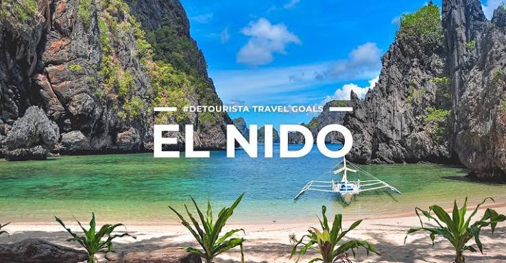
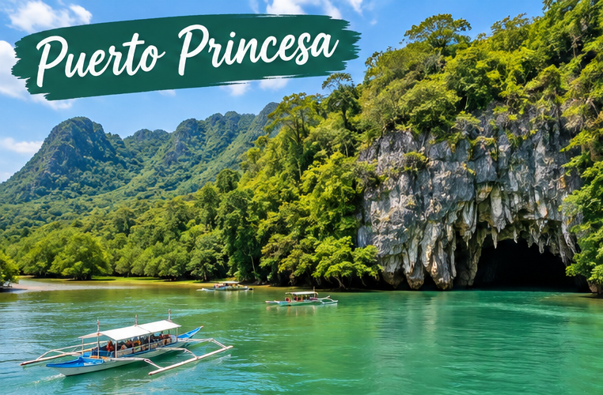
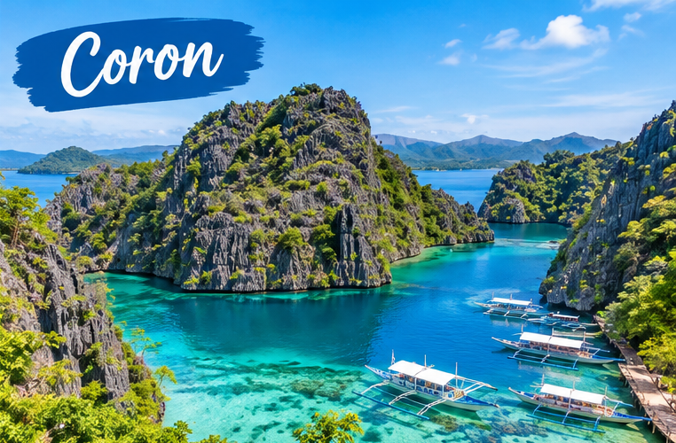

THE LAST FRONTIER
Discover the Beauty of Palawan
Palawan is a province in the Philippines famous for its natural beauty, islands, beaches, and clear waters. It is a wonderful destination for travelers who enjoy nature and outdoor adventures.

DESTINATION 01
El Nido
El Nido is a popular tourist destination in Palawan. It is known for its limestone cliffs, beautiful lagoons, white-sand beaches, and clear blue water.
Best for: Island hopping, swimming, and sightseeing.

DESTINATION 02
Puerto Princesa
Puerto Princesa is the capital city of Palawan. It is known for its beautiful beaches, green forests, and the famous Puerto Princesa Underground River.
Best for: Underground river tours, sightseeing, and nature trips.

DESTINATION 03
Coron
Coron is a beautiful tourist destination in Palawan. It is famous for its clear blue lakes, limestone cliffs, coral reefs, and amazing island views.
Best for: Island hopping, snorkeling, diving, and swimming.

DESTINATION 04
Balabac
Balabac is a group of islands in southern Palawan. It is known for its white-sand beaches, turquoise waters, and beautiful, peaceful island scenery.
Best for: Beach camping, island hopping, and photography.

DESTINATION 05
San Vicente
San Vicente is a coastal municipality in Palawan. It is famous for Long Beach, a long stretch of white sand, clear waters, and relaxing coastal scenery.
Best for: Beach relaxation, swimming, and island hopping.